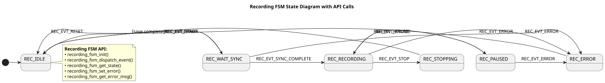

This diagram illustrates the Recording Finite State Machine (FSM) used in the TWS earphone system. The FSM manages audio recording states, coordinates between earphone and charging case, handles synchronization, and provides error recovery mechanisms.
Note: The actual PlantUML diagram would be rendered here. Below is a textual representation.

If the SVG is not available, please generate it using PlantUML.
| State | Description | Entry Action | Exit Action |
|---|---|---|---|
| REC_IDLE | Initial idle state, waiting for recording start | reset_recording_config() | clear_recording_buffer() |
| REC_WAIT_SYNC | Waiting for device synchronization | start_device_sync() | stop_sync_timer() |
| REC_RECORDING | Active recording state | start_audio_capture() | stop_audio_capture() |
| REC_PAUSED | Recording paused state | pause_audio_capture() | resume_audio_capture() |
| REC_STOPPING | Finalizing recording and saving | finalize_recording() | cleanup_resources() |
| REC_ERROR | Error state for handling failures | set_error_state() | clear_error_state() |
| From State | Event | To State | API Call |
|---|---|---|---|
| REC_IDLE | REC_EVT_START | REC_WAIT_SYNC | recording_fsm_dispatch_event(REC_EVT_START) |
| REC_WAIT_SYNC | REC_EVT_SYNC_COMPLETE | REC_RECORDING | recording_fsm_dispatch_event(REC_EVT_SYNC_COMPLETE) |
| REC_WAIT_SYNC | REC_EVT_ERROR | REC_ERROR | recording_fsm_set_error() |
| REC_RECORDING | REC_EVT_PAUSE | REC_PAUSED | recording_fsm_dispatch_event(REC_EVT_PAUSE) |
| REC_PAUSED | REC_EVT_RESUME | REC_RECORDING | recording_fsm_dispatch_event(REC_EVT_RESUME) |
| REC_RECORDING | REC_EVT_STOP | REC_STOPPING | recording_fsm_dispatch_event(REC_EVT_STOP) |
| REC_STOPPING | [save complete] | REC_IDLE | recording_fsm_get_state() == REC_IDLE |
| REC_ERROR | REC_EVT_RESET | REC_IDLE | recording_fsm_dispatch_event(REC_EVT_RESET) |
@startuml
title Recording FSM State Diagram with API Calls
state "REC_IDLE" as idle
state "REC_WAIT_SYNC" as wait_sync
state "REC_RECORDING" as recording
state "REC_PAUSED" as paused
state "REC_STOPPING" as stopping
state "REC_ERROR" as error
idle -> wait_sync : REC_EVT_START
wait_sync -> recording : REC_EVT_SYNC_COMPLETE
wait_sync -> idle : REC_EVT_ERROR
recording -> paused : REC_EVT_PAUSE
paused -> recording : REC_EVT_RESUME
recording -> stopping : REC_EVT_STOP
stopping -> idle : [save complete]
recording -> error : REC_EVT_ERROR
paused -> error : REC_EVT_ERROR
wait_sync -> error : REC_EVT_ERROR
error -> idle : REC_EVT_RESET
[*] -> idle
note right of idle
Recording FSM API:
• recording_fsm_init()
• recording_fsm_dispatch_event()
• recording_fsm_get_state()
• recording_fsm_set_error()
• recording_fsm_get_error_msg()
end note
@enduml
Note: This HTML file provides a comprehensive view of the Recording FSM. To view the actual diagram, ensure the SVG file is generated and placed in the same directory.